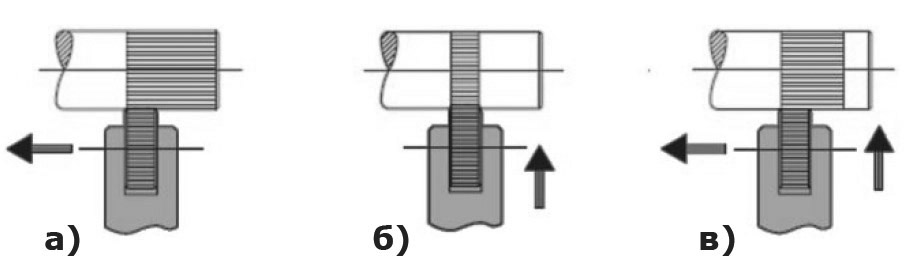

Накатывание рифлений не относится к процессу резания, т.к. в течение него происходит только поверхностное деформирование заготовки без снятия материала. Так как накатывание рифлений является процессом холодной штамповки, этот метод подходит только для холодно-деформируемых материалов. В результате процесса формообразования происходит небольшое увеличение наружного диаметра.
Главным преимуществом данного метода является разнообразие возможных профилей рифлений. Также накатывание подходит для наружного, внутреннего или конического рифления.
При накатывании рифлений державку прижимают к вращающейся детали. Ролики начинают вращаться и, вдавливаясь в материал детали, образуют на ее поверхности соответствующий профиль накатывания. В зависимости от направления движения инструмента разделяют три способа накатки: радиальный, осевой и комбинированный. При этом ось инструмента расположена параллельно оси заготовки.
Нарезание рифлений методом фрезерования является альтернативой процесса накатывания рифлений. Во время обработки происходит снятие материала. Этот метод особенно подходит для тонкостенных заготовок, мягких материалов (например, пластмассы) или труднообрабатываемых материалов. Нарезание рифлений отличается высокой точностью и отличным качеством поверхности, поэтому этот метод рекомендуется для производства высококачественных профилей. В отличие от накатывания рифлений, деформация поверхности и смещение материала незначительны. Нагрузка на оборудование также относительно мала.
Одним из основных ограничений метода нарезания рифлений является более узкий диапазон возможный профилей. Кроме того, в связи с минимальной деформацией поверхности, прочность профиля рифления снижается.
При нарезании рифлений державка так же прижимается к вращающейся детали, но ролик уже неподвижно закреплен в державке и расположен под определенным углом к заготовке. При этом происходит снятие материала, как при фрезеровании, с образованием определенного профиля поверхности. Инструмент для нанесения рифлений на поверхность резанием работает только при подаче в осевом направлении (рис. 2).
Ролики изготавливаются из быстрорежущей стали, полученной методом порошковой металлургии. Сталь, полученная данным способом, обладает большей стойкостью к износу, прочностью и твердостью.